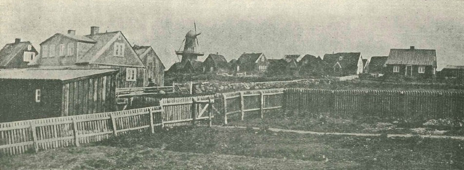

um 1870
Þingholtsbæirnir á ljósmynd frá um 1870. Þingholtsbæirnir voru Þingholt, Magnúsarbær, Sigvaldabær, Sigríðarbær og Suðurbær. Stóðu þar sem nú er Þingholtsstræti 3 - 9. Bærinn Þingholt var fyrst byggður árið 1765, en hinir Þingholtsbæirnir voru byggðir um og upp úr 1800.

Þingholtsbæirnir á ljósmyndum 1870